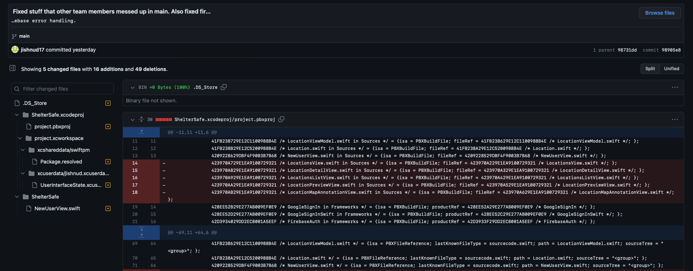

ISP Journal
Plans for the Week:
Firebase Error Handling
Significant Achievements:

Significant Achievements
Merged branches to update main
Significant Achievements
This merged Onik's branch.
THis merged Saivikas' branch.
Main wasn't working so I was attempting to fix it by dealing with conflicting files.
This in addition to commands in terminal fixed main
THis created a login screen on the home page.
Pulling from my own branch from Main in order to fix errors from the merge.
Technical Challenges
The main branch of our Github stopped working so I needed to fix it.
Scheduling Challenges
Our ISP is going very smoothly and progress is very rapid.
Interpersonal Challenges
There are no interpersonal challenges as everyone doing work on the ISP is working together smoothly.
Significant Achievements
This merge commited point annotations on shelters.
The national weather service API implementation was merged into main
I merged Main into Pranav's branch so he would get updates but wouldn't lose his progress
I merged Pranav's branch with the progress back into main.
I merged Onik's branch with main which created markers on the map for shelters.
I merged Saivikas' branch into main which created a login screen upon opening the app.
Technical Challenges
We got the NWS API linked up so you can view weather events on the App. We also presented our project this week to the class.
Scheduling Challenges
Between a combination of Mr. Ben being back and us realizing our deadline is coming up progress has resumed again on our ISP.
Interpersonal Challenges
We've had more progress this week than the last 2 weeks combined as everone needs to have 3 commits by Friday.
Technical Challenges
Nothing was really done this week. We still need to add the National Weather Service API and implement UIkit.
Scheduling Challenges
Some of our members are in Maryland for a Cybersecurity competition so progress wan't really made this week. So we have less time to finish our product.
Interpersonal Challenges
None of us did any work on the ISP this week.
Technical Challenges
No one except our project manager did any work on the ISP this week. His fix made the UI more readable.
Scheduling Challenges
None of us did any work on the ISP this week. Which gives us more work to do later on.
Interpersonal Challenges
None of us did any work on the ISP this week.
Technical Challenges
There was an issue with merging that caused a lot of errors. However that was easily fixed as commits can be easily reversed. After that we had a few issues with actual errors.
Scheduling Challenges
We had a lot of the week off so not much work got done.
Interpersonal Challenges
More people on our ISP are contributing especially for creating the slides and posters.
>>>>>>> ff3e58fab25947b8ab7b341c1edb66f40af228e4
Technical Challenges
There was an issue with merging that caused a lot of errors. However that was easily fixed as commits can be easily reversed. After that we had a few issues with actual errors.
Scheduling Challenges
We had a lot of the week off so not much work got done.
Interpersonal Challenges
More people on our ISP are contributing especially for creating the slides and posters.
Technical Challenges
One of our team members figured out the camera issue and now we are back on track for the ISP.
Scheduling Challenges
We all had a very busy week but we all still got our ISP moving forward at a steady pace.
Interpersonal Challenges
More people on our ISP are contributing especially for creating the slides and posters.
Technical Challenges
We are struggling to get the camera to jump the user's current location. We think the solution has something to do with viewport. The Mapbox documentation is difficult to understand as well.
Scheduling Challenges
The issue with the camera is slowing us down a little but we can most likely catch up pretty easily in the coming weeks. We don't really have any problems with time.
Interpersonal Challenges
Most people on our ISP aren't contributing to the coding, but it isn't really a problem as the ISP is still going smoothly.
This week we didn't have school for most of the week due to snow and ice.
Technical Challenges
I had some difficulties setting up the new repository as we moved repositories. I also had issues with getting contentview to work on Xcode. Howfever, I figured it all out in the end.
Scheduling Challenges
There weren't really any issues with scheduling as our ISP team got all work done in a timely manner. I don't expect scheduling issues to arise in the future.
Interpersonal Challenges
There aren't really many except that our ISP team has more people than necessary. The actual work element of our ISP is pretty small.
Technical Challenges
We needed to create a file called .netrc. It is the API key that lets the app connect to the API. We had some difficulties setting it up.
Scheduling Challenges
There weren't really any issues with scheduling as our ISP team got all work done in a timely manner. However we may need to all be assigned specific jobs to keep the pace faster. I don't expect scheduling issues to arise in the future.
Interpersonal Challenges
There were some arguments between team members due to conflicting ideas about how the project should be run. It wasn't really that large of a conflict. However, problems like these may arise in the future.
Technical Challenges
While setting up the repository there were some difficulties with understanding the interface and being able to create issues smoothly. I personally made some mistakes with creating issues. After that there were difficulties with connecting the repository with each of our respective directories. However, the problems were quickly resolved and I know now how to fix them if they arise in the future.
Scheduling Challenges
There weren't really any issues with scheduling as our ISP team got all work done in a timely manner. However, I expect this to change in the future as we start moving further with the project and have more responsibilities assigned to us. As one of the larger ISP groups we may do better on timing than other groups.
Interpersonal Challenges
Our primary interpersonal challenges were all related to the assigning of the roles. There were a few debates about who would be best to be a manager. Fortunately in the end all the roles were finalized and out group can move forward in the project.
(Software) Development Engineer
Development engineers conceptualize and design products for the team or company. These products can vary from medical equipment to cell phones. These engineers are tasked with implementing the project and creating the product based on the concept idea. In short the bulk of the actual product design is the responsibility of Development engineers.
QA Engineer
Their job is to essentially review the work of other team members and make sure it is the best that it can be. Their job is also creating test cases for the code to make sure it efficiently and accurately performs all the tasks it needs to do. They also need to make sure testing is coordinated and finished within the deadline. Additionally, they work with the development engineer to make sure that the product works as planned.
Project Manager
The project manager organizes and leads the team. The manager defines the product goals and is ultimately responsible for the success or failure of the project. They also do things like create a budget and resolve any potential problems the project may run into. Overall the project manager keeps the team on track and working toward the goal.
Product Manager
The product manager overviews the development engineers and QA engineers. They essentially lead the creation of the final product. They are in charge of overviewing the development of the product. They must also keep track of the timeline and ensure the product is being completed in a timely manner.
Release Engineer
These engineers are responsible for making sure the source code is stored in repositories. These engineers in our project mainly just manage the GitHub repositories. These engineers are important as without proper backups of code product design becomes risky in case something doesn't work out.
Technical Challenges
While setting up the repository there were some difficulties with understanding the interface and being able to create issues smoothly. I personally made some mistakes with creating issues. After that there were difficulties with connecting the repository with each of our respective directories. However, the problems were quickly resolved and I know now how to fix them if they arise in the future.
Scheduling Challenges
There weren't really any issues with scheduling as our ISP team got all work done in a timely manner. However, I expect this to change in the future as we start moving further with the project and have more responsibilities assigned to us. As one of the larger ISP groups we may do better on timing than other groups.
Interpersonal Challenges
Our primary interpersonal challenges were all related to the assigning of the roles. There were a few debates about who would be best to be a manager. Fortunately in the end all the roles were finalized and out group can move forward in the project.